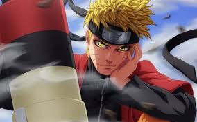
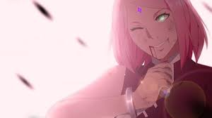
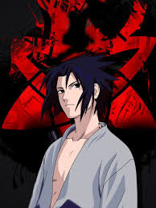

<!DOCTYPE html>
<html>
  <head>
    <meta charset="utf-8">
    <meta name="viewport" content="width=device-width">
    <title>replit</title>
    <link href="style.css" rel="stylesheet" type="text/css" />
  </head>
  <body>
    
    <script src="script.js"></script>
  </body>
</html>
<h1>Naruto <h1>
  
<P>NARUTO É UM ÓRFÃO CUJO O DESTINO FOI SELADO NO DIA QUE NASCEU.  NELE, FOI SELADA A RAPOSA (KURAMA), UM MOSTRO  DE PODER IMENSO QUE ATACOU A VILA DA FOLHA (KONOHA) HÁ MUITRO TEMPO.POR CAUSA DISSO, PARTE DA VILA O REJEITAVA, MAS AO INVÉS DE SE REVOLTAR COM A SITUAÇÃO, NARUTO TEM O SONHO DE TRANFORMAR-SE NO NINJA MAIS FORTE DA VILA E PROVAR O VALOR DELE A TODOS
  <P> SAKURA HARUNO  
     
    <p> Colega de Naruto e Sasuke no time 7, Sakura é uma jovem cheia de energia que estar mais interessada em paixonite por Sasuke do que torna-se uma ninja. apesar disso, ela é bastante dedicada e inteligente, e logo vai perceber que precisa amadurecer para sobreviver neste mundo  
      <p>Sasuke Uchiha 
         
        <p> Melhor amigo e rival de Nuruto, Sasuke também  tem um passado trágico. Último sobrevivente do clã Uchiha que até que até então eram os mais fortes de konoha,ele tem como objetivo vingar-se de Itachi, seu irmão mais  velho e autor desse massacre. Sasuke é um gênio natural,mas tem trevas provundas rondando ele e  esta sede de vingança pode ser sua perdição.  
          <p>kakashi hatake
          <img src = "kakashi. jpg "
